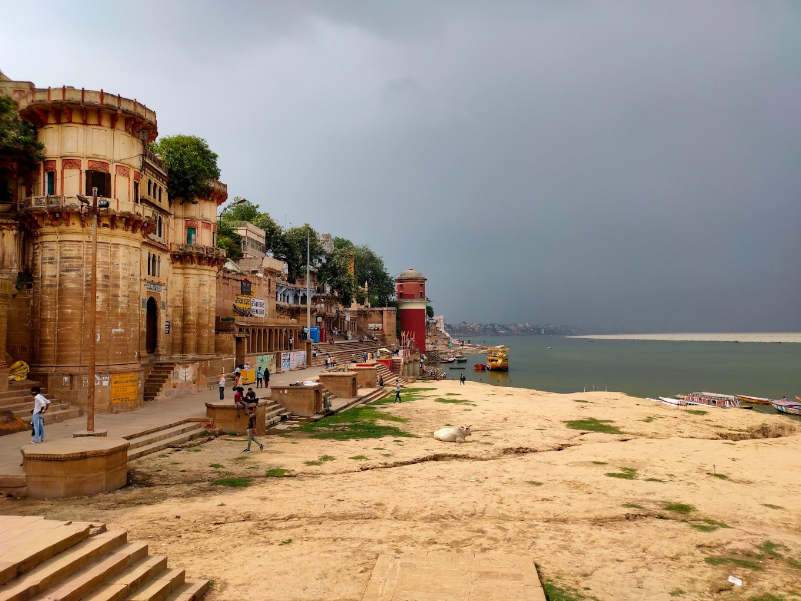
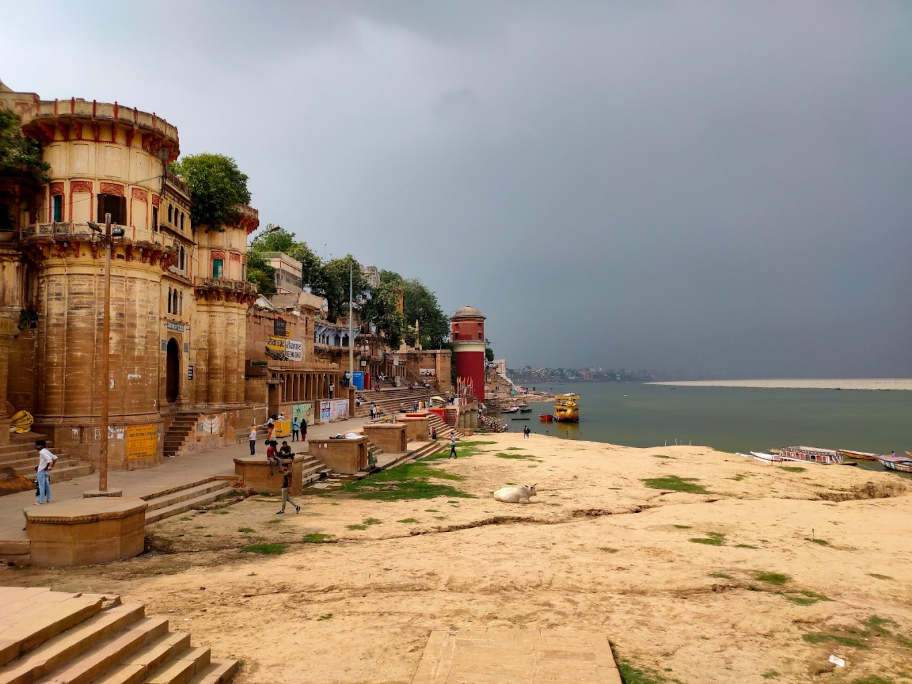

First Slide Title
First slide description

Second Slide Title
Second slide description

Third Slide Title
Third slide description
First slide description
Second slide description
Third slide description

Jaunpur, city, southeastern Uttar Pradesh state, northern India. It straddles the Gomati River, about 35 miles (55 km) northwest of Varanasi (Benares). Jaunpur probably was originally founded in the 11th century but was washed away by Gomati floods. It was rebuilt in 1359 by Fīrūz Shah Tughluq, whose fort still stands. .

Shahi Qila, also known as Karar Fort or Jaunpur Fort, is a fort built during the 14th century in Jaunpur, Uttar Pradesh, India. The fort is located close to the Shahi Bridge on the Gomti river

Veer Bahadur Singh Purvanchal University, formerly Purvanchal University, is a public state university based in Jaunpur, Uttar Pradesh, India. It was established in 1987 as a residential-cum-affiliating university. It is named after Shri Veer Bahadur Singh, the former chief minister of Uttar Pradesh.

 



Book your Royal Wedding Venue at Royal Rajmahal Jaunpur. It is Uttar Pradesh first heritage site where you can create your wedding memorie
Know More ...
The Tilak Dhari PG College (TD College) is considered one of the top colleges in India. It was established as an English Middle School in 1914 by Sri Tilak Dhari Singh and in 1916 recognised as Kshatriya High School. Tilak Dhari College in 1947 acquired the status of a degree college and was affiliated with Agra University. Later the affiliation shifted to Gorakhpur University in 1956. TD College received the Postgraduation status in 1970.
Know More ...
The temple of Ma Sheetla Chaukiya Devi is quite old. The worship of Shiv and Shakti has been going on since times immemorial. History states that, during the era of Hindu kings, the governance of Jaunpur was in the hands of Ahir rulers. Heerchand Yadav is considered the first Aheer ruler of Jaunpur. The descendants of this clan used to surname ‘Ahir’. .
Know More ...© 2023 Complex UI. All Rights Reserved.
Back to Top